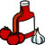
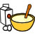
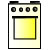

Define los acuerdos sobre el proceso de producción
Además Clara y sus amigas, decidieron que podrían hacer los pasos 1 al 4, sin la necesidad de tener pedidos, esto les ayudaría a preparar más rápido la pizza una vez que salieran los pedidos.
La venta la harían justo antes del paso 5, en donde sabrían qué ingredientes específicos añadir a la masa de pizza que pueden tener ya listas para hornearse.
Aparte de esto Hilda tuvo la idea de hacer algunas pruebas para calcular el tiempo que tardaban en hacer los pasos 5 al 9, para saber qué tan rápido podían ofrecer el servicio a sus clientes.
Resume las actividades
A continuación se presenta un resumen de todas las actividades que definieron para la preparación de la pizza.
Desliza la barra de navegación hacia arriba y abajo para ver la información.
Tabla parte 1
Descripción de la actividad |
Observaciones |
| Salsa | |
| Colocar sartén en la parrilla. | A fuego lento |
| Tomar la mantequilla correspondiente. | Media cucharada |
| Agregar la mantequilla al sartén. |  |
| Picar finamente el diente de ajo. | |
| Cortar un trocito de cebolla. | |
| Colocar el ajo y cebolla en sartén. | |
| Freír la cebolla y el ajo. | |
| Agregar la salsa de tomate al sartén. | |
| Agregar pimienta blanca al sartén. | Una cucharadita |
| Agregar orégano molido al sartén. | Una cucharadita |
| Revolver esporádicamente. | |
| Masa | |
| Vaciar la harina al recipiente. | 1 kilo |
| Vaciar agua al recipiente. |  |
| Revolver con la mano hasta formar una masa. | |
| Colocar la masa en una bolsa de plástico. | 10 min. |
| Dejar reposar la masa. | |
| Rallar queso. | |
Tabla parte 2
Descripción de la actividad |
Observaciones |
| Precocido | |
| Encender el horno. |  |
| Dejar calentar el horno. | |
| Verificar que la masa haya inflado. | |
| Separar la masa en partes. | |
| Engrosar los moldes. | Con manteca |
| Extender la masa en molde. | |
| Picar la masa en molde. | |
| Colocar los moldes en horno. | |
| Precocer los moldes. | 20 min. |
| Verificar que estén precocidas las bases. | |
| Sacar los moldes del horno. | |
Tabla parte 3
Descripción de la actividad |
Observaciones |
| Terminado | |
| Trasladar moldes a mesa de enfriamiento. | 0.5 min. |
| Esperar a que enfríen las bases. | 10 min. |
| Trasladar los moldes a mesa de elaboración. | 0.5 min. |
| Verter dos cucharadas de salsa en la base. | |
| Repartir la salsa en toda el área de la base. | |
| Pesar queso. | 67 gr. |
| Espolvorear el queso en toda la base. | |
| Colocar ingredientes. | |
| Colocar en horno la pizza. | |
| Hornear hasta que el queso se derrita totalmente. | 5 min. |
| Verificar que la pizza esté bien cocida. | |
| Empacar | |
| Trasladar el molde a mesa de empaquetamiento. | |
| Rebanar la pizza. | |
| Colocar pizza en caja. | |